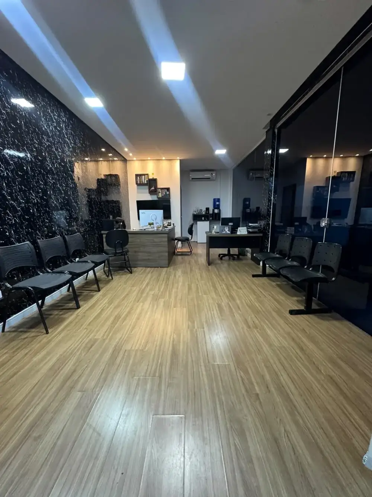
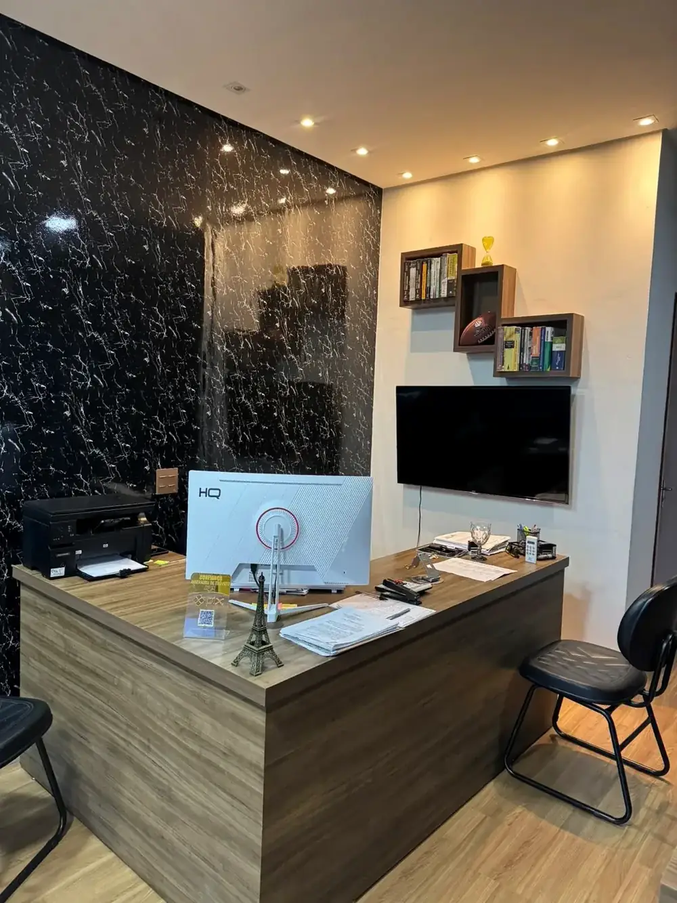
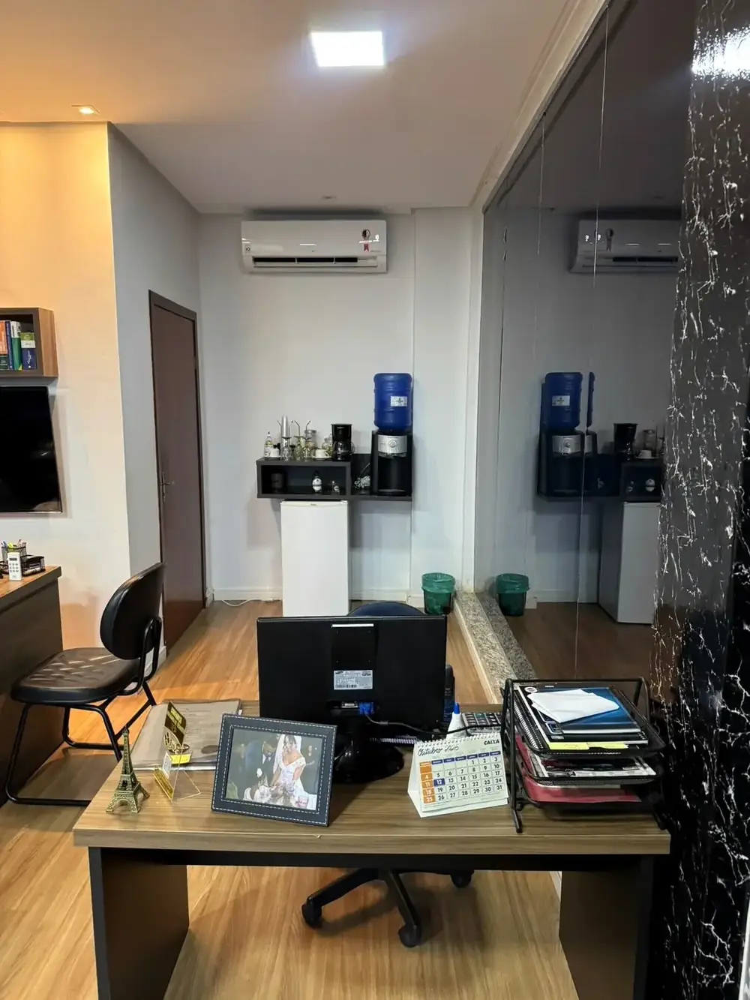
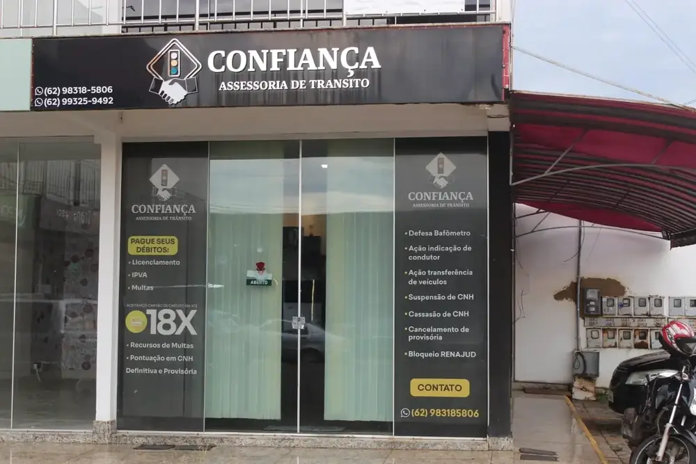

Suspensão da CNH
Orientação sobre processos administrativos de suspensão do direito de dirigir, notificações e documentação relacionada.
Informações sobre este assunto ↗Assessoria jurídica e de trânsito · Anápolis/GO
A Confiança atua na análise e orientação de procedimentos de trânsito, com atenção individual a cada situação e clareza sobre as etapas envolvidas.

Áreas de atuação
Cada procedimento tem regras, prazos e documentos próprios. A primeira etapa é compreender o caso e identificar quais caminhos podem ser avaliados.
Orientação sobre processos administrativos de suspensão do direito de dirigir, notificações e documentação relacionada.
Informações sobre este assunto ↗Informações sobre procedimentos de cassação, etapas administrativas e documentos que podem ser necessários.
Informações sobre este assunto ↗Análise de situações envolvendo autuação por álcool, teste do bafômetro ou recusa ao procedimento.
Informações sobre este assunto ↗Leitura das informações disponíveis no auto e na notificação para orientar a avaliação das medidas cabíveis.
Informações sobre este assunto ↗
Como funciona
O atendimento começa pela compreensão da situação. A equipe orienta quais documentos são necessários para a análise inicial e explica as etapas seguintes.
Você explica, de forma resumida, o que aconteceu e qual é a sua dúvida.
A equipe informa quais documentos são pertinentes, como CNH ou documento do veículo.
As informações são examinadas para identificar o contexto, os prazos e as possibilidades aplicáveis.
Você recebe explicações sobre a avaliação e os próximos passos, conforme as particularidades do caso.
A Confiança
A história da empresa começou em 2012, inicialmente como Apoio Assessoria de Trânsito. Em 2017, a operação passou a atuar sob o nome Confiança Assessoria de Trânsito.
Desde então, a proposta é oferecer atendimento próximo, acompanhar cada situação individualmente e explicar com transparência os procedimentos envolvidos.
Vivência em gestão e documentação de trânsito, conforme histórico informado pela empresa.
Atendimento com suporte de profissionais jurídicos associados, conforme a natureza de cada demanda.
Explicações sobre documentos, etapas e possibilidades sem antecipar resultados.

Atendimento
A Confiança realiza atendimento presencial em Anápolis e região. Grande parte das demandas pode ser conduzida de forma online; a necessidade de comparecimento depende das características de cada caso.

Dúvidas frequentes
As respostas abaixo são gerais. A orientação aplicável depende dos documentos e das circunstâncias de cada situação.
Grande parte das demandas pode ser conduzida online. Em algumas situações específicas, pode ser necessário atendimento presencial ou outra providência. Isso é explicado após compreender o caso.
Depende do assunto. Em geral, a equipe orienta sobre o envio da CNH, do documento do veículo, de notificações ou de outros registros relacionados à situação.
Não é adequado antecipar ou garantir resultados. Cada procedimento depende das circunstâncias, dos documentos, dos prazos e da análise técnica e jurídica correspondente.
Entre as principais demandas estão processos de suspensão ou cassação da CNH, autuações relacionadas à Lei Seca e ao bafômetro, recusa ao teste e recursos de multas de trânsito.
Confiança Assessoria Jurídica e de Trânsito
Entre em contato para receber informações sobre o atendimento e os documentos necessários.